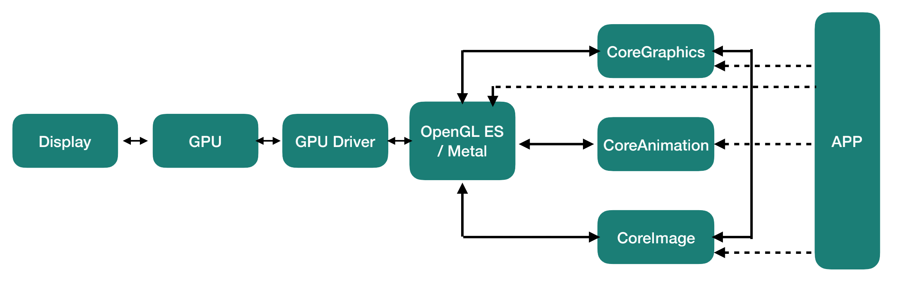
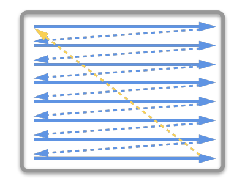
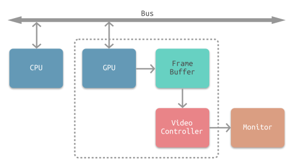
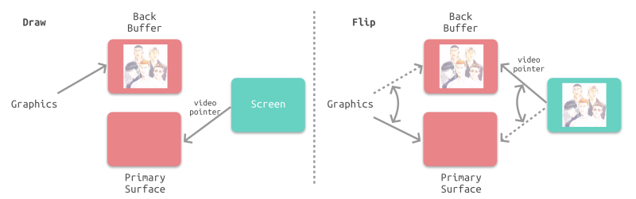
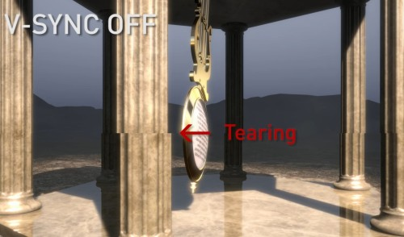
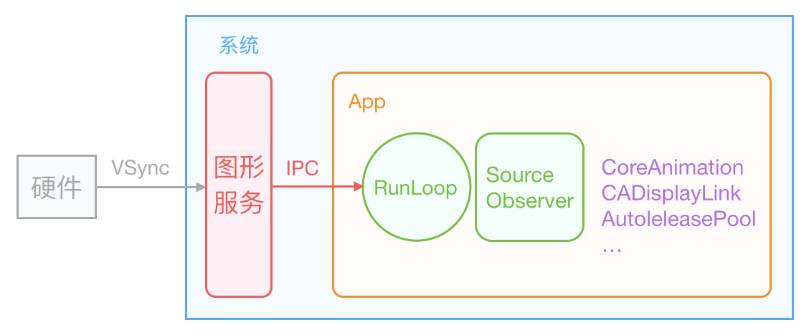

前言
Hi Coder，我是 CoderStar！
作为一名专业的 iOS 页面仔，画 UI 是我们的家常便饭，那不知道你在开发过程中有没有思考过这样一些问题：
- App 静止不动时，页面是否还进行刷新？
- 页面渲染和
RunLoop之间是什么关系？ - 主
RunLoop周期与屏幕刷新率（VSync）之间有关系吗？如果有，是什么关系？ - …
不知道你有没有过这些疑问？如果有，请耐心看完本文，我们一起来逐步走进这些问题的答案，看看 UI 的渲染流程到底是什么样的。如果没有，那请联系我。😂😂
文章中有一些原理性文字描述来自于参考资料，站在巨人的肩膀上，对相关流程进行总结梳理。
图形渲染框架
我们先来了解一下 UI 渲染的相关框架，不能对一些名词傻傻分不清。

通过上图显示流程，我们整体了解一下 UI 渲染涉及的框架。
UIKit：UIKit自身并不具备在屏幕成像的能力，其主要负责对用户操作事件的响应（UIView继承自UIResponder），事件响应的传递大体是经过逐层的视图树遍历实现的。其中iOS上对应的是UIKit，Mac OS对应的是AppKit；关于事件响应，之前也写过一篇文章 iOS中的事件响应。Core Animation：Core Animation其实是一个令人误解的命名。你可能认为它只是用来做动画的，但实际上它是从一个叫做Layer Kit这么一个不怎么和动画有关的名字演变而来的，所以做动画仅仅是Core Animation特性的冰山一角。提供强大的 2D 和 3D 动画效果。对应到系统 Framework 中不是这个名字，而是QuartzCore.framework，以CA开头的都是它所属的类。Core Graphics：Core Graphics主要用于运行时绘制图像，纯 C 的 API。CoreGraphics的类名都是以CG开头的，平时所用的CGRect、CGPoint就在CGGeometry这个几何相关的类中定义，CGFont类则被封装成了UIFont，CGImage构成了UIImage，CGContext是绘图的上下文等等。所以CoreGraphics是系统绘制界面、文字、图像等 UI 的基础。Core Image：
Core Image是用来处理运行前创建的图像 的。Core Image框架拥有一系列现成的图像过滤器，能对已存在的图像进行高效的处理。给图片提供各种滤镜处理，比如高斯模糊、锐化等。在没有这个官方库之前，一般使用的是GPUImage的三方库。
大部分情况下，Core Image会在GPU中完成工作，但如果GPU忙，会使用CPU进行处理。OpenGL(ES)：OpenGL不是常规意义上的 API，而是一个第三方标准（由khronos组织制定并维护），其严格定义了每个函数该如何执行，以及它们的输出值。至于每个函数内部具体是如何实现的，则由OpenGL库的开发者自行决定。实际OpenGL库的开发者通常是显卡的生产商。类似的标准还有DirectX，由Microsoft提供。用在 PC 机上。OpenGL ES（OpenGL for Embedded Systems，简称 GLES），是 OpenGL 的子集。用在移动嵌入式设备上，iOS 使用的是该标准。需要人机界面的嵌入式应用，由于受环境因素的影响，一般不能提供有缘电源，在有限的电能限制下工作，如何以更低的功耗完成人机交互界面，成为
OpenGL必须要面对的问题，进而推出了OpenGL ES标准。应该说在高效完成 2D/3D 界面的同时，达到了降低功耗的效果。Metal：Metal类似于OpenGL ES，也是一套标准，具体实现由苹果实现。Core Animation、Core Image、SceneKit、SpriteKit等等渲染框架都是构建于Metal之上的。
图像显示原理
介绍屏幕图像显示的原理，需要先从 CRT 显示器原理说起，如下图所示。CRT 的电子枪从上到下逐行扫描，扫描完成后显示器就呈现一帧画面。然后电子枪回到初始位置进行下一次扫描。为了同步显示器的显示过程和系统的视频控制器，显示器会用硬件时钟产生一系列的定时信号。当电子枪换行进行扫描时，显示器会发出一个水平同步信号（horizonal synchronization），简称 HSync；而当一帧画面绘制完成后，电子枪回复到原位，准备画下一帧前，显示器会发出一个垂直同步信号（vertical synchronization），简称 VSync。显示器通常以固定频率进行刷新，这个刷新率就是 VSync 信号产生的频率。虽然现在的显示器基本都是液晶显示屏了，但其原理基本一致。
VSync信号由屏幕显示器硬件产生，是物理属性，一般不会改变。不同显示器的VSync信号频率也会不同，如 iPhone 的 60HZ，iPad Pro 的 120HZ，以及 PC 显示器的 144HZ 等等。

下图所示为常见的 CPU、GPU、显示器工作方式。CPU 计算好显示内容提交到 GPU，GPU 渲染完成后将渲染结果放入帧缓冲区 (frame buffer)，随后视频控制器会按照 VSync 信号逐行读取帧缓冲区的数据，经过可能的数模转换传递给显示器显示。

最简单的情况下，帧缓冲区只有一个。此时，帧缓冲区的读取和刷新都都会有比较大的效率问题。为了解决效率问题，GPU 通常会引入两个缓冲区，即 双缓冲 机制。双缓冲机制会增加一个新的备用缓冲器（back buffer）。渲染结果会预先保存在back buffer 中，在接收到 Vsync 信号的时候，视频控制器会将 back buffer 中的内容置换到 frame buffer 中，此时就能保证置换操作几乎在一瞬间完成（实际上是交换了内存地址）。
frame buffer与back buffer也被称为前帧缓存、后帧缓存。

双缓冲虽然能解决效率问题，但会引入一个新的问题。当 GPU 处理速度较快或者视频控制器读取较慢, 以至于第一帧还没有读取完的时候就被调换 帧缓存的话, 那么就会造成同一画面上下两个部分是由 frame buffer 和 back buffer 共同组成的. 那么画面就会出现撕裂效果。

为了解决这个问题，GPU 通常有一个机制叫做垂直同步（简写也是 VSync），当开启垂直同步后，GPU 会等待显示器的 VSync 信号发出后，才进行新的一帧渲染和缓冲区更新。
除了
VSync机制之后，实际上还有更优的策略，如 Nvidia 的G-Sync和 AMD 的FreeSync。
虽然V-Sync解决了画面撕裂问题，但是如果在一个 VSync 时间周期内，CPU 或者 GPU 没有完成内容提交，则那一帧就会被丢弃，等待下一次机会再显示，而这时显示屏会保留之前的内容不变。这就是界面卡顿的原因，也就是我们常说的掉帧。
整个图形渲染过程是 CPU 与 GPU 共同处理的结果，不管是哪部分卡顿，都会造成最终的掉帧
Core Animation Pipeline
同系列文章 iOS页面渲染-UIView & CALayer 中已经介绍过CALayer的相关细节，我们可以知道：CALayer 中的 contents 属性保存了由设备渲染流水线渲染好的位图 bitmap（通常也被称为 backing store），而当设备屏幕进行刷新时，会从 CALayer 中读取生成好的 bitmap，进而呈现到屏幕上。
同系列文章还有 iOS页面渲染-离屏渲染 。
我们知道了 CALayer 成像的过程， 那么它是如何调用 GPU 并显示可视化内容的呢？下面我们就需要看下 Core Animation 流水线的工作流程。

Application
这个过程发生在 APP 自身的进程中，其过程包括包括视图的创建、布局计算、图片解码、文本绘制等等。
因为此阶段是我们开发过程中可以控制的阶段，所以 UI 优化的方向通常也是在该阶段，优化的措施可以查看
从过程来看，App 调用 Render Server 前的最后一步 Commit Transaction 其实可以细分为 4 个步骤：
- Handle Events
- Layout
- Display
- Prepare
- Commit
Handle Events
这个过程中会先处理触摸事件，APP 启动之后，Core Animation 会在 Runloop 注册一个 Observer，监听了 BeforeWaiting 和 Exit 回调，优先级为 2000000，低于常见的其他 Observer。
这个
Observer名字为_ZN2CA11Transaction17observer_callbackEP19__CFRunLoopObservermPv，其实 APP 启动之后还会有其他的Observer，详情后续会在 RunLoop 相关文章中展开。
当一个触摸事件到来时，RunLoop 被唤醒，App 中的代码会执行一些操作，比如创建和调整视图层级、设置 UIView 的 frame、修改 CALayer 的透明度、为视图添加一个动画；这些操作最终都会被 CALayer 标记，并通过 CATransaction 提交到一个中间状态去。当上面所有操作结束后，RunLoop 即将进入休眠（或者退出）时，关注该事件的 Observer 都会得到通知。这时 Core Animation 注册的那个 Observer 就会在回调中，把所有的中间状态合并提交到 GPU 去显示；
只会将打上标记的
CALayer提交下述后面操作，像刚才所说的 创建和调整视图层级、修改frame都会打上打上标记，我们也可以调用我们平时常见的setNeedsLayout手动添加标记。
Layout
这个阶段主要处理视图的构建和布局，具体步骤包括：
- 调用重载的
layoutSubviews方法 - 创建视图，并通过
addSubview方法添加子视图 - 计算视图布局，即所有的
Layout Constraint
由于这个阶段是在 CPU 中进行，通常是 CPU 限制或者 IO 限制，所以我们应该尽量高效轻量地操作，减少这部分的时间，比如减少非必要的视图创建、简化布局计算、减少视图层级等。
Display
这个阶段主要是交给 Core Graphics 进行视图的绘制，注意不是真正的显示：
正常情况下 Display 阶段只会得到图元 primitives信息（通常是三角形、线段、顶点等），而位图 bitmap 是在 GPU 中根据图元信息绘制得到的。
但是如果重写了 drawRect: 方法，这个方法会直接调用 Core Graphics 绘制方法得到 bitmap 数据，同时系统会额外申请一块内存，用于暂存绘制好的 bitmap。
由于重写了
drawRect:方法，导致绘制过程从 GPU 转移到了 CPU，这就导致了一定的效率损失。与此同时，这个过程会额外使用 CPU 和内存，因此需要高效绘制，否则容易造成 CPU 卡顿或者内存爆炸。
Prepare
Prepare 阶段属于附加步骤，一般处理图像的解码和转换等操作。
Commit
这一步主要是：将图层打包并以 IPC 的形式发送到 Render Server。
注意 commit 操作是依赖图层树递归执行的，所以如果图层树过于复杂，commit 的开销就会很大。这也是我们希望减少视图层级，从而降低图层树复杂度的原因。
Render Server
我们之前谈到过 UIView 是利用 CALayer 完成渲染工作，但实际上 CALayer 也只是对绘制任务进行描述，其帮助我们避免使用 OpenGL ES/Metal 等低级 API 直接操作 GPU 完成绘制工作。Core Animation 将我们上述描述好的 UI 信息以 IPC 的形式提供给系统常驻的 UI 绘制进程，通过系统服务完成真正的使用低级 API 操作 GPU 完成渲染的任务 。
这个进程就是我们所说的Render Server。在 iOS 5 和之前的版本是 SpringBoard 进程（同时管理着 iOS 的主屏）。在 iOS 6 之后的版本中叫做BackBoard。

Decode：打包好的图层被传输到Render Server之后，首先会进行解码。注意完成解码之后需要等待下一个RunLoop才会执行下一步Draw Calls。Draw Calls：解码完成后，Core Animation会调用下层渲染框架（比如OpenGL或者Metal）的方法进行绘制，进而调用到 GPU。

通过上面章节我们已经知道VSync 信号由硬件时钟生成，每秒钟发出 60 次（这个值取决设备硬件，比如 iPhone 真机上通常是 59.97）。iOS 图形服务接收到 VSync 信号后，会通过 IPC 通知到 对应 App 内。
Render Server 渲染进程会在启动后注册对应的 CFRunLoopSource 通过 mach_port 接收传过来的VSync信号通知来驱动图层的渲染，进而提交至 GPU。
这句话告诉我们
Render Server的刷新频率其实就与屏幕刷新频率一致。
其实动画也是在该进程进行处理，这也是 Core Animation 的重要作用之一，从过去文章中我们知道 CALayer 的三棵树，其中三棵树之一的Presentation Tree也是在该进程得到。
大部分情况动画在
Render Server Process中处理插值，但是UIScrollview在滚动过程中好像不是这么回事，这也是RunLoop有一个专门的 Tracking Mode 原因之一，具体细节还在研究中。我们也可以不依赖
Render Server而实现动画，那我们就可以使用 Facebook 的 pop，其核心原理是利用CADisplayLink来完成每一帧的提交渲染来实现动画。
GPU
这一阶段主要由 GPU 进行渲染，也就是上图中的下半部分，主要过程包括
- GPU 收到
Command Buffer，包含图元primitives信息； - Tiler 开始工作：先通过顶点着色器
Vertex Shader对顶点进行处理，更新图元信息； - 平铺过程：平铺生成
tile bucket的几何图形，这一步会将图元信息转化为像素，之后将结果写入Parameter Buffer中； - Tiler 更新完所有的图元信息，或者
Parameter Buffer已满，则会开始下一步； - Renderer 工作：将像素信息进行处理得到
bitmap，之后存入Render Buffer； Render Buffer中存储有渲染好的bitmap，供之后的Display操作使用；
Display
显示阶段，需要等 render 结束的下一个 RunLoop 触发显示。
渲染过程总结梳理
Core Animation 会在 Runloop 注册一个 Observer，当事件到来的时候，Runloop 会被唤醒处理相关的业务逻辑（UIView 的创建，修改，添加动画等，等到进入Before Waiting时机时，相应的回调会进行一些处理。如
- 对
layer tree调用layoutIfNeeded; - 处理
Animation - …
- 将 UI 信息提交到
Render Server
这里的提到的事件其实日常以触摸事件居多，除此之外，还有有其他的事件，如网络请求回来后的
DispatchQueue.main.async刷新 UI 等等。将 UI 信息提交到
Render Server这个操作除了 RunLoop 回调时自动调用之外，我们还可以使用CATransaction.flush()进行强制提交。
UI 信息提交到Render Server之后，会等到VSync信号的到来，等到来后其会通过更底层的OpenGL ES/Metal 做一些绘制操作，然后把处理完的数据（纹理，顶点，着色器等）提交给 GPU
下一个 VSync 信号到来的时候，视频控制器读取帧缓冲区的数据显示到屏幕上。
相关补充
关于layoutIfNeeded&setNeedsLayout
通过上述流程以及之前的文章，我们可以将我们日常开发中使用的setNeedsLayout以及layoutIfNeeded与渲染流程串起来了。
setNeedsLayout只是将指定 UIView(背后的 CALayer) 打上待刷新标记而已，而layoutIfNeeded也只是重新计算子视图的 frame 信息，并且会在 RunLoop 回调时自动调用，其都不会去真正的去刷新页面显示内容。
关于 CADisplayLink
理论上 APP 进程中 RunLoop 的刷新频率与 VSync 信号没有任何关系，但是当注册CADisplayLink之后，情况就不一样了。
当有了CADisplayLink之后，我们会发现 RunLoop 会多出一个 Port 转发过来处理的 source1。
至于怎么获取，可以直接打断点，可以直接使用
po RunLoop.main命令打印出主 RunLoop 相关信息，对比一下就 ok 了。
1 | <CFRunLoopSource 0x282dc8000 [0x1cadcf728]>{ |
有这样一个 source1 被加入了 Runloop。CADisplaylink 也是基于这个 port 完成了 VSync 信号的注册工作。产生 VSync 信号的进程，每 16.7ms 进行一次到这个 port 的 mach msg 发送工作，从而不断的激活本 App 的 Runloop ，触发一个 item，完成本 App 对 VSync 的感知。
补充一下：基于 CADisplayLink 实现的 FPS 在生产场景中只有指导意义，不能代表真实的 FPS，因为基于 CADisplayLink 实现的 FPS 无法完全检测出当前 Core Animation 的性能情况，它只能检测出当前 RunLoop 的帧率。但要真正定位到准确的性能问题所在，最好还是通过
Instrument来确认。
最后
看到这里，相信你对文章开头提出的疑问已经有了自己的答案。
要更加努力呀！
Let’s be CoderStar!
- 谈 UIKit 和 CoreAnimation 在 iOS 渲染中的角色（上）
- 谈 UIKit 和 CoreAnimation 在 iOS 渲染中的角色（下）
- 计算机那些事(8)——图形图像渲染原理
- iOS开发-视图渲染与性能优化
- iOS 图像渲染原理
- iOS 保持界面流畅的技巧
- 一文读懂iOS图像显示原理与优化
- runloop与Vsync 信号
- 深入理解 iOS Rendering Process
- iOS Rendering 渲染全解析（长文干货）
- iOS 事件处理机制与图像渲染过程
- Core Animation Programming Guide
- iOS 渲染原理解析
- iOS 的图形绘制原理
- Kernel Programming Guide
- What is VSync, and when should you use it?
- iOS Core Animation: Advanced Techniques中文译本
- How to, simply, wait for any layout in iOS?